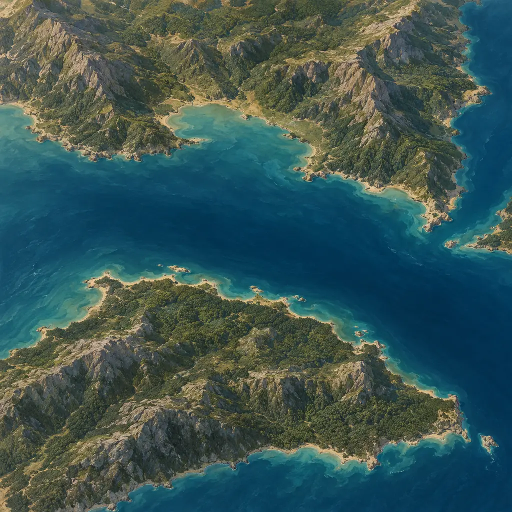
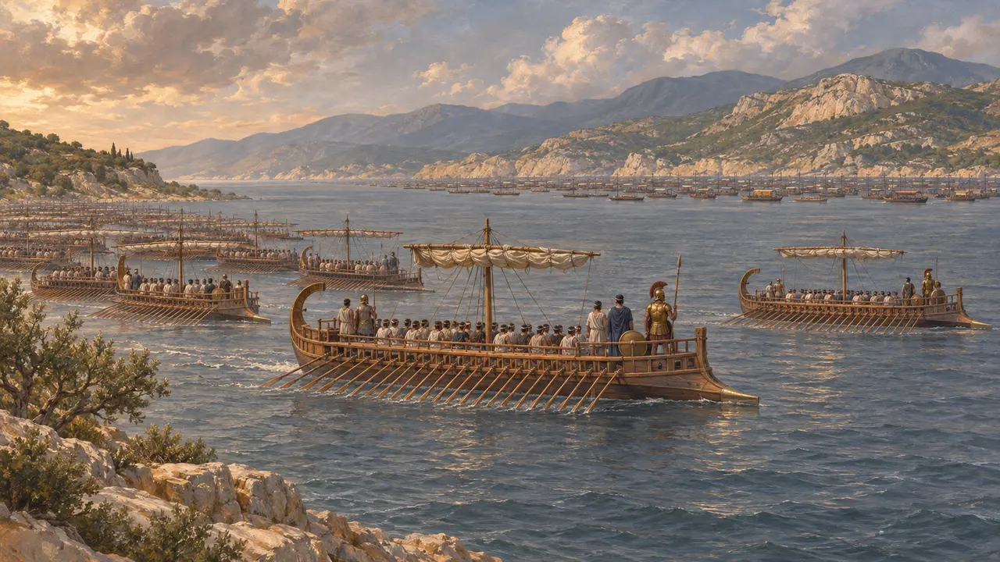
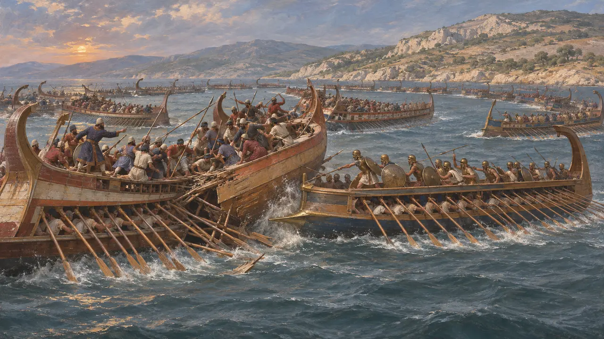
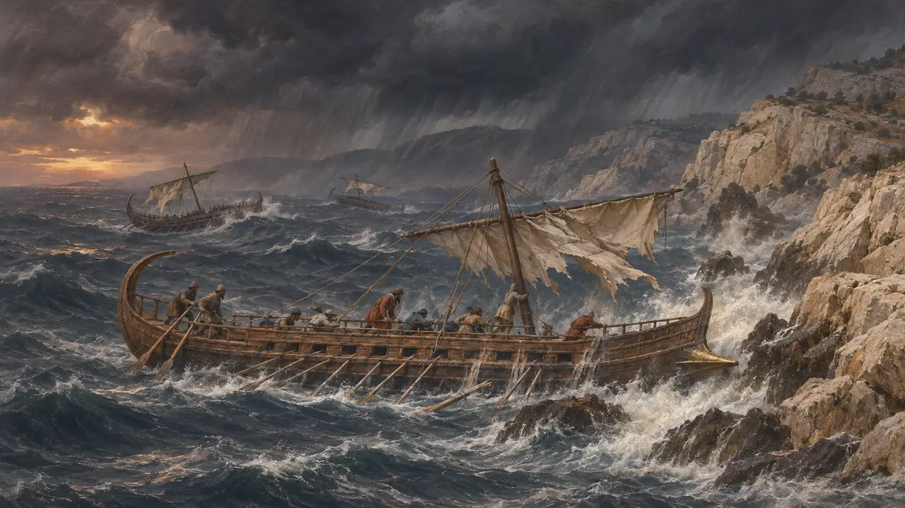
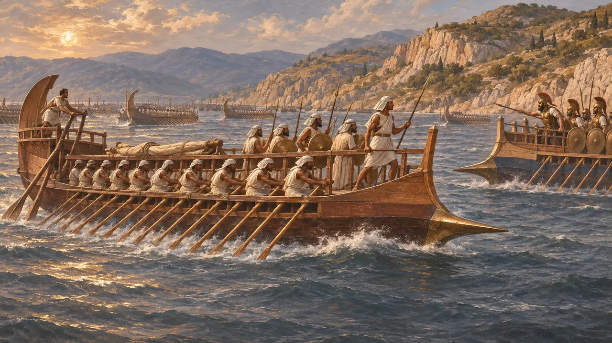
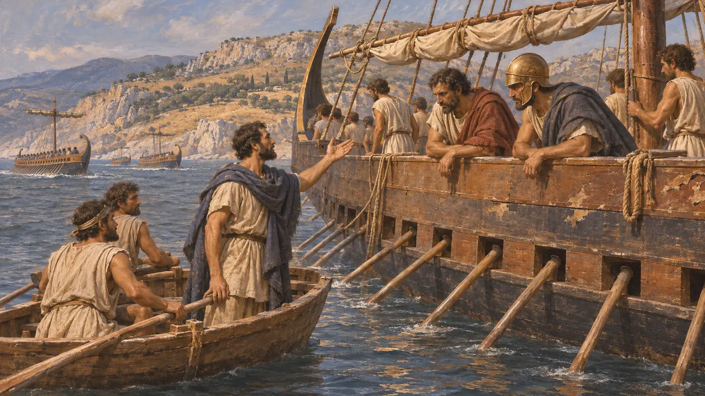

معركة أرتيميسيوم
معركة بحرية قبالة شمال إيوبويا بين أسطول خشايارشا واليونانيين، 480 ق.م
في اللعبة: المستوى 10: البوابات الحارّة
كانت أرتيميسيوم سلسلة من المعارك البحرية في أواخر صيف 480 ق.م قبالة الطرف الشمالي لجزيرة أوبويا، دارت في الأيام نفسها التي جرت فيها المعركة البرية في ثرموبيلاي. صمد الأسطول اليوناني في المضيق ثلاثة أيام أمام أسطول خشايارشا الأكبر، وتكبّد أضرارًا جسيمة، ثم انسحب جنوبًا حين بلغه نبأ سقوط الممر. ولم يحسم أي من الطرفين المعركة، وإن رأى بلوتارخ لاحقًا أن اليونانيين تعلموا هناك أن سفن الملك يمكن مواجهتها.
في اللعبة: تتبع اللعبة رواية هيرودوت عن الأيام الثلاثة والانسحاب. وتعرض حطام المئتي سفينة التي أُرسلت حول إيوبيا كأنه حقيقة، مع أن كثيراً من المؤرخين يشككون في هذه القصة.

أسطولان في المضيق
رواية قديمةيقول هيرودوت إن اليونانيين حشدوا 271 سفينة ثلاثية المجاديف عند أرتيميسيوم بقيادة الإسبرطي يوريبيادس، وكانت أثينا أكبر المساهمين فيها؛ ثم لحقت بها 53 سفينة أثينية أخرى. أما أسطول الملك، وقد أنهكته عاصفة قبالة مغنيسيا، فألقى مراسيه في المقابل عند أفيتاي. وكان الموقع اليوناني يحرس الطريق البحري الذي يجاور الطريق عبر ثرموبيلاي، فكان الأسطول والجيش في الممر يحمي كلٌّ منهما الآخر.
Herodotus 7.188-192, 8.1-2, 8.4, 8.14

ثلاثة أيام من القتال
رواية قديمةيروي هيرودوت أن اليونانيين هاجموا في أواخر اليوم الأول. وحاول الفرس، ومعهم سفن أكثر وأفضل إبحارًا، تطويقهم، فانضم اليونانيون في دائرة مقدمات سفنها إلى الخارج واستولوا على ثلاثين سفينة. وفي المساء الثاني ضربوا سفن القيليقيين. وفي اليوم الثالث تقدم أسطول الملك في هيئة هلال، فازدحم وتشابكت سفنه، وخسر الجانبان سفنًا كثيرة؛ وتضررت نصف السفن الأثينية.
Herodotus 8.9-18

السفن المرسلة حول إيوبويا
متنازع عليهيقول هيرودوت إن 200 سفينة أُرسلت حول إيوبيا لقطع طريق انسحاب اليونانيين، وإن عاصفة ليلية حطّمتها كلها على الساحل المسمى المجاويف؛ ورأى في ذلك عملًا من الإله لتقريب قوة الأسطولين. ويشكك كثير من المؤرخين في هذه الرواية: فمن الصعب إدراج هذه المفرزة في الجدول الزمني. ويُعتقد على نطاق واسع أيضًا أن مجموعه البالغ 1,207 سفن ثلاثية المجاديف لأسطول الملك مبالغ فيه.
Herodotus 7.89, 8.7, 8.13; C. Hignett, Xerxes' Invasion of Greece, 1963

دفاع واحد أم معركتان
متنازع عليهيشير هيرودوت إلى أن المعارك البحرية وهجمات ثرموبيلاي وقعت في الأيام نفسها. ويختلف الباحثون المحدثون في ما إذا كان اليونانيون قد خططوا للممر والمضيق بوصفهما دفاعًا واحدًا، وفي المدة التي نوى الأسطول البقاء فيها. ولا يذكر أي نقش أو لوح فارسي أرتيميسيوم، فلا يُعرف الجانب الفارسي إلا من الكتّاب اليونانيين؛ ويصف هيرودوت السفن المصرية بأنها أفضل ما في أسطول الملك.
Herodotus 8.15, 8.17; J. F. Lazenby, The Defence of Greece 490-479 BC, 1993

الانسحاب والذكرى
رواية قديمةيقول هيرودوت إن اليونانيين المنهَكين كانوا يعتزمون الانسحاب فعلاً حين جاء أبرونيخوس بالنبأ على قارب بأن ليونيداس قد سقط؛ فأبحروا جنوباً، ثم تجمّع الأسطول لاحقاً عند سلاميس. ونقش ثيميستوكليس رسائل على الصخور عند موارد المياه يحث فيها الأيونيين في أسطول الملك على الانشقاق أو القتال بتراخٍ. أما بلوتارخ، الذي كتب بعد قرون، فاستشهد ببيت لبندار يقول إن الأثينيين وضعوا عند أرتيميسيوم أساس حريتهم.
Herodotus 8.18, 8.21-22; Plutarch, Themistocles 8
المصادر
- Herodotus 8.1-23
- Herodotus 7.188-195
- Plutarch, Themistocles 7-9
- Diodorus 11.12-13
- J. F. Lazenby, The Defence of Greece 490-479 BC, 1993
- C. Hignett, Xerxes' Invasion of Greece, 1963